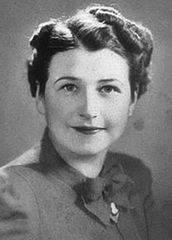

Sierra circular
Tabitha Babbitt
Invención de la sierra circular. Observó cómo los hombres usaban sierras de dos manos y propuso una herramienta más eficiente. En 1813, creó la primera sierra circular conocida, que ayudó a revolucionar la industria maderera. Aunque no patentó su invento (por razones religiosas, ya que los Shakers no buscaban lucro), se le atribuye la innovación.